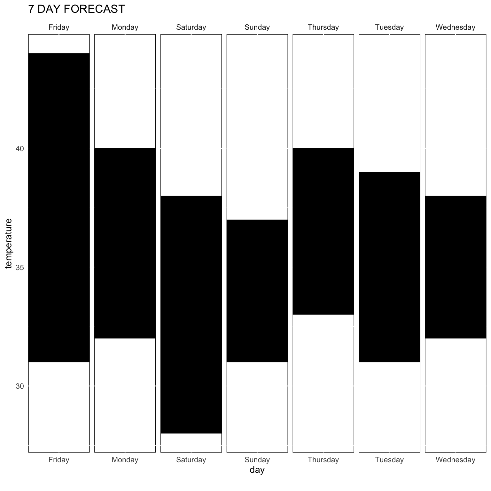
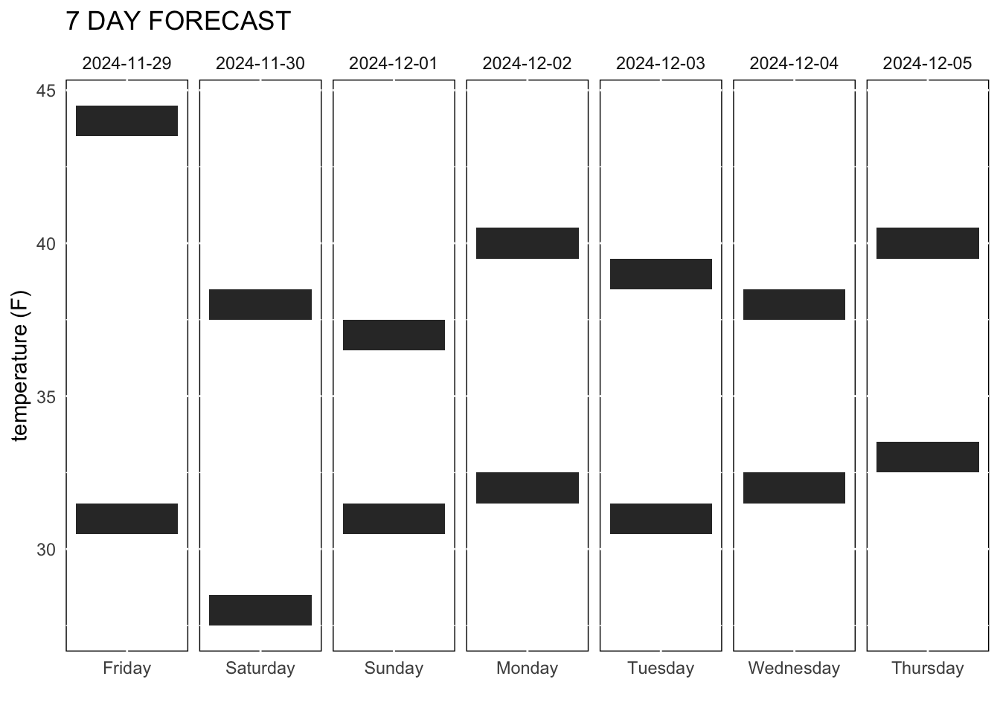

library(httr2)
library(tidyverse)
library(repurrrsive)
library(ggplot2)U.S. National Weather Service
Step by Step Process through the U.S. NWS API for a 7 Day Forcast

The U.S. National Weather Service is part of a federal agency that monitors climate (longterm weather averages), provides weather forecasts, warnings, and general information to the public. Their data is openly available for use through its API for developers.
Exploration Goal: Obtain 7-Day Forecast for New York
The NWS website states the grid forecast can be obtained with coordinates. The longitude and latitude points for New York are 40.730610, -73.935242 respectively.
·Load Libraries:
·Assigning Values:
api_base_url <- "https://api.weather.gov/"
ny_coords <- "https://api.weather.gov/points/40.7128,-74.0060"·Requesting from the API:
ask_api<- request(ny_coords) %>%
req_perform()
api_response<-
resp_body_json(ask_api) %>%
glimpse()List of 5
$ @context :List of 2
..$ : chr "https://geojson.org/geojson-ld/geojson-context.jsonld"
..$ :List of 17
.. ..$ @version : chr "1.1"
.. ..$ wx : chr "https://api.weather.gov/ontology#"
.. ..$ s : chr "https://schema.org/"
.. ..$ geo : chr "http://www.opengis.net/ont/geosparql#"
.. ..$ unit : chr "http://codes.wmo.int/common/unit/"
.. ..$ @vocab : chr "https://api.weather.gov/ontology#"
.. ..$ geometry :List of 2
.. ..$ city : chr "s:addressLocality"
.. ..$ state : chr "s:addressRegion"
.. ..$ distance :List of 2
.. ..$ bearing :List of 1
.. ..$ value :List of 1
.. ..$ unitCode :List of 2
.. ..$ forecastOffice :List of 1
.. ..$ forecastGridData:List of 1
.. ..$ publicZone :List of 1
.. ..$ county :List of 1
$ id : chr "https://api.weather.gov/points/40.7128,-74.006"
$ type : chr "Feature"
$ geometry :List of 2
..$ type : chr "Point"
..$ coordinates:List of 2
.. ..$ : num -74
.. ..$ : num 40.7
$ properties:List of 17
..$ @id : chr "https://api.weather.gov/points/40.7128,-74.006"
..$ @type : chr "wx:Point"
..$ cwa : chr "OKX"
..$ forecastOffice : chr "https://api.weather.gov/offices/OKX"
..$ gridId : chr "OKX"
..$ gridX : int 33
..$ gridY : int 35
..$ forecast : chr "https://api.weather.gov/gridpoints/OKX/33,35/forecast"
..$ forecastHourly : chr "https://api.weather.gov/gridpoints/OKX/33,35/forecast/hourly"
..$ forecastGridData : chr "https://api.weather.gov/gridpoints/OKX/33,35"
..$ observationStations: chr "https://api.weather.gov/gridpoints/OKX/33,35/stations"
..$ relativeLocation :List of 3
.. ..$ type : chr "Feature"
.. ..$ geometry :List of 2
.. ..$ properties:List of 4
..$ forecastZone : chr "https://api.weather.gov/zones/forecast/NYZ072"
..$ county : chr "https://api.weather.gov/zones/county/NYC061"
..$ fireWeatherZone : chr "https://api.weather.gov/zones/fire/NYZ212"
..$ timeZone : chr "America/New_York"
..$ radarStation : chr "KDIX"The glimpse() function shows all the groups of data for our chosen coordinates. Since our goal is to pull the weeks predicted weather, the information needed is stored in the endpoint named $forecast .
#Assigning endpoint value
forecast <- "https://api.weather.gov/gridpoints/OKX/33,35/forecast"
#Requesting from the API again
ask_again <-
request(forecast) %>%
req_perform()
response_again <-
resp_body_json(ask_again) %>%
glimpse()List of 4
$ @context :List of 2
..$ : chr "https://geojson.org/geojson-ld/geojson-context.jsonld"
..$ :List of 5
.. ..$ @version: chr "1.1"
.. ..$ wx : chr "https://api.weather.gov/ontology#"
.. ..$ geo : chr "http://www.opengis.net/ont/geosparql#"
.. ..$ unit : chr "http://codes.wmo.int/common/unit/"
.. ..$ @vocab : chr "https://api.weather.gov/ontology#"
$ type : chr "Feature"
$ geometry :List of 2
..$ type : chr "Polygon"
..$ coordinates:List of 1
.. ..$ :List of 5
$ properties:List of 7
..$ units : chr "us"
..$ forecastGenerator: chr "BaselineForecastGenerator"
..$ generatedAt : chr "2024-11-29T16:13:20+00:00"
..$ updateTime : chr "2024-11-29T14:36:55+00:00"
..$ validTimes : chr "2024-11-29T08:00:00+00:00/P7DT17H"
..$ elevation :List of 2
.. ..$ unitCode: chr "wmoUnit:m"
.. ..$ value : num 2.13
..$ periods :List of 14
.. ..$ :List of 14
.. ..$ :List of 14
.. ..$ :List of 14
.. ..$ :List of 14
.. ..$ :List of 14
.. ..$ :List of 14
.. ..$ :List of 14
.. ..$ :List of 14
.. ..$ :List of 14
.. ..$ :List of 14
.. ..$ :List of 14
.. ..$ :List of 14
.. ..$ :List of 14
.. ..$ :List of 14Now, we’ll unnest and rectangle the data.
·Converting to Tibble:
response_df<- tibble(response_again)str(response_df) %>%
print()I encountered many errors in unnesting because of the structure of the data. When using glimpse() or print() the data seeemd as though I would point to $properties to unnest.
But in using view() the data looked different. str() shows whats inside in a very readable sort of way, but view() is perfect for identifying/naming the items in code. This format was necessary to point to the appropriate items to unnest.
See below:
str(response_df$response_again[[4]]) %>%
glimpse()List of 7
$ units : chr "us"
$ forecastGenerator: chr "BaselineForecastGenerator"
$ generatedAt : chr "2024-11-29T16:13:20+00:00"
$ updateTime : chr "2024-11-29T14:36:55+00:00"
$ validTimes : chr "2024-11-29T08:00:00+00:00/P7DT17H"
$ elevation :List of 2
..$ unitCode: chr "wmoUnit:m"
..$ value : num 2.13
$ periods :List of 14
..$ :List of 14
.. ..$ number : int 1
.. ..$ name : chr "Today"
.. ..$ startTime : chr "2024-11-29T11:00:00-05:00"
.. ..$ endTime : chr "2024-11-29T18:00:00-05:00"
.. ..$ isDaytime : logi TRUE
.. ..$ temperature : int 44
.. ..$ temperatureUnit : chr "F"
.. ..$ temperatureTrend : chr ""
.. ..$ probabilityOfPrecipitation:List of 2
.. .. ..$ unitCode: chr "wmoUnit:percent"
.. .. ..$ value : int 20
.. ..$ windSpeed : chr "9 to 13 mph"
.. ..$ windDirection : chr "W"
.. ..$ icon : chr "https://api.weather.gov/icons/land/day/bkn/rain_showers,20?size=medium"
.. ..$ shortForecast : chr "Partly Sunny then Slight Chance Rain Showers"
.. ..$ detailedForecast : chr "A slight chance of rain showers after 1pm. Partly sunny. High near 44, with temperatures falling to around 42 i"| __truncated__
..$ :List of 14
.. ..$ number : int 2
.. ..$ name : chr "Tonight"
.. ..$ startTime : chr "2024-11-29T18:00:00-05:00"
.. ..$ endTime : chr "2024-11-30T06:00:00-05:00"
.. ..$ isDaytime : logi FALSE
.. ..$ temperature : int 31
.. ..$ temperatureUnit : chr "F"
.. ..$ temperatureTrend : chr ""
.. ..$ probabilityOfPrecipitation:List of 2
.. .. ..$ unitCode: chr "wmoUnit:percent"
.. .. ..$ value : int 20
.. ..$ windSpeed : chr "13 mph"
.. ..$ windDirection : chr "W"
.. ..$ icon : chr "https://api.weather.gov/icons/land/night/rain_showers,20/few?size=medium"
.. ..$ shortForecast : chr "Slight Chance Rain Showers then Mostly Clear"
.. ..$ detailedForecast : chr "A slight chance of rain showers before 7pm. Mostly clear. Low around 31, with temperatures rising to around 33 "| __truncated__
..$ :List of 14
.. ..$ number : int 3
.. ..$ name : chr "Saturday"
.. ..$ startTime : chr "2024-11-30T06:00:00-05:00"
.. ..$ endTime : chr "2024-11-30T18:00:00-05:00"
.. ..$ isDaytime : logi TRUE
.. ..$ temperature : int 38
.. ..$ temperatureUnit : chr "F"
.. ..$ temperatureTrend : chr ""
.. ..$ probabilityOfPrecipitation:List of 2
.. .. ..$ unitCode: chr "wmoUnit:percent"
.. .. ..$ value : NULL
.. ..$ windSpeed : chr "9 to 14 mph"
.. ..$ windDirection : chr "W"
.. ..$ icon : chr "https://api.weather.gov/icons/land/day/few?size=medium"
.. ..$ shortForecast : chr "Sunny"
.. ..$ detailedForecast : chr "Sunny, with a high near 38. Wind chill values as low as 24. West wind 9 to 14 mph."
..$ :List of 14
.. ..$ number : int 4
.. ..$ name : chr "Saturday Night"
.. ..$ startTime : chr "2024-11-30T18:00:00-05:00"
.. ..$ endTime : chr "2024-12-01T06:00:00-05:00"
.. ..$ isDaytime : logi FALSE
.. ..$ temperature : int 28
.. ..$ temperatureUnit : chr "F"
.. ..$ temperatureTrend : chr ""
.. ..$ probabilityOfPrecipitation:List of 2
.. .. ..$ unitCode: chr "wmoUnit:percent"
.. .. ..$ value : NULL
.. ..$ windSpeed : chr "12 to 15 mph"
.. ..$ windDirection : chr "W"
.. ..$ icon : chr "https://api.weather.gov/icons/land/night/few?size=medium"
.. ..$ shortForecast : chr "Mostly Clear"
.. ..$ detailedForecast : chr "Mostly clear, with a low around 28. Wind chill values as low as 19. West wind 12 to 15 mph."
..$ :List of 14
.. ..$ number : int 5
.. ..$ name : chr "Sunday"
.. ..$ startTime : chr "2024-12-01T06:00:00-05:00"
.. ..$ endTime : chr "2024-12-01T18:00:00-05:00"
.. ..$ isDaytime : logi TRUE
.. ..$ temperature : int 37
.. ..$ temperatureUnit : chr "F"
.. ..$ temperatureTrend : chr ""
.. ..$ probabilityOfPrecipitation:List of 2
.. .. ..$ unitCode: chr "wmoUnit:percent"
.. .. ..$ value : NULL
.. ..$ windSpeed : chr "12 to 15 mph"
.. ..$ windDirection : chr "W"
.. ..$ icon : chr "https://api.weather.gov/icons/land/day/sct?size=medium"
.. ..$ shortForecast : chr "Mostly Sunny"
.. ..$ detailedForecast : chr "Mostly sunny, with a high near 37. West wind 12 to 15 mph."
..$ :List of 14
.. ..$ number : int 6
.. ..$ name : chr "Sunday Night"
.. ..$ startTime : chr "2024-12-01T18:00:00-05:00"
.. ..$ endTime : chr "2024-12-02T06:00:00-05:00"
.. ..$ isDaytime : logi FALSE
.. ..$ temperature : int 31
.. ..$ temperatureUnit : chr "F"
.. ..$ temperatureTrend : chr ""
.. ..$ probabilityOfPrecipitation:List of 2
.. .. ..$ unitCode: chr "wmoUnit:percent"
.. .. ..$ value : NULL
.. ..$ windSpeed : chr "8 to 13 mph"
.. ..$ windDirection : chr "W"
.. ..$ icon : chr "https://api.weather.gov/icons/land/night/few?size=medium"
.. ..$ shortForecast : chr "Mostly Clear"
.. ..$ detailedForecast : chr "Mostly clear, with a low around 31."
..$ :List of 14
.. ..$ number : int 7
.. ..$ name : chr "Monday"
.. ..$ startTime : chr "2024-12-02T06:00:00-05:00"
.. ..$ endTime : chr "2024-12-02T18:00:00-05:00"
.. ..$ isDaytime : logi TRUE
.. ..$ temperature : int 40
.. ..$ temperatureUnit : chr "F"
.. ..$ temperatureTrend : chr ""
.. ..$ probabilityOfPrecipitation:List of 2
.. .. ..$ unitCode: chr "wmoUnit:percent"
.. .. ..$ value : NULL
.. ..$ windSpeed : chr "12 mph"
.. ..$ windDirection : chr "W"
.. ..$ icon : chr "https://api.weather.gov/icons/land/day/sct?size=medium"
.. ..$ shortForecast : chr "Mostly Sunny"
.. ..$ detailedForecast : chr "Mostly sunny, with a high near 40."
..$ :List of 14
.. ..$ number : int 8
.. ..$ name : chr "Monday Night"
.. ..$ startTime : chr "2024-12-02T18:00:00-05:00"
.. ..$ endTime : chr "2024-12-03T06:00:00-05:00"
.. ..$ isDaytime : logi FALSE
.. ..$ temperature : int 32
.. ..$ temperatureUnit : chr "F"
.. ..$ temperatureTrend : chr ""
.. ..$ probabilityOfPrecipitation:List of 2
.. .. ..$ unitCode: chr "wmoUnit:percent"
.. .. ..$ value : NULL
.. ..$ windSpeed : chr "9 mph"
.. ..$ windDirection : chr "W"
.. ..$ icon : chr "https://api.weather.gov/icons/land/night/sct?size=medium"
.. ..$ shortForecast : chr "Partly Cloudy"
.. ..$ detailedForecast : chr "Partly cloudy, with a low around 32."
..$ :List of 14
.. ..$ number : int 9
.. ..$ name : chr "Tuesday"
.. ..$ startTime : chr "2024-12-03T06:00:00-05:00"
.. ..$ endTime : chr "2024-12-03T18:00:00-05:00"
.. ..$ isDaytime : logi TRUE
.. ..$ temperature : int 39
.. ..$ temperatureUnit : chr "F"
.. ..$ temperatureTrend : chr ""
.. ..$ probabilityOfPrecipitation:List of 2
.. .. ..$ unitCode: chr "wmoUnit:percent"
.. .. ..$ value : NULL
.. ..$ windSpeed : chr "12 mph"
.. ..$ windDirection : chr "W"
.. ..$ icon : chr "https://api.weather.gov/icons/land/day/sct?size=medium"
.. ..$ shortForecast : chr "Mostly Sunny"
.. ..$ detailedForecast : chr "Mostly sunny, with a high near 39."
..$ :List of 14
.. ..$ number : int 10
.. ..$ name : chr "Tuesday Night"
.. ..$ startTime : chr "2024-12-03T18:00:00-05:00"
.. ..$ endTime : chr "2024-12-04T06:00:00-05:00"
.. ..$ isDaytime : logi FALSE
.. ..$ temperature : int 31
.. ..$ temperatureUnit : chr "F"
.. ..$ temperatureTrend : chr ""
.. ..$ probabilityOfPrecipitation:List of 2
.. .. ..$ unitCode: chr "wmoUnit:percent"
.. .. ..$ value : NULL
.. ..$ windSpeed : chr "10 mph"
.. ..$ windDirection : chr "W"
.. ..$ icon : chr "https://api.weather.gov/icons/land/night/bkn?size=medium"
.. ..$ shortForecast : chr "Mostly Cloudy"
.. ..$ detailedForecast : chr "Mostly cloudy, with a low around 31."
..$ :List of 14
.. ..$ number : int 11
.. ..$ name : chr "Wednesday"
.. ..$ startTime : chr "2024-12-04T06:00:00-05:00"
.. ..$ endTime : chr "2024-12-04T18:00:00-05:00"
.. ..$ isDaytime : logi TRUE
.. ..$ temperature : int 38
.. ..$ temperatureUnit : chr "F"
.. ..$ temperatureTrend : chr ""
.. ..$ probabilityOfPrecipitation:List of 2
.. .. ..$ unitCode: chr "wmoUnit:percent"
.. .. ..$ value : NULL
.. ..$ windSpeed : chr "10 mph"
.. ..$ windDirection : chr "W"
.. ..$ icon : chr "https://api.weather.gov/icons/land/day/bkn?size=medium"
.. ..$ shortForecast : chr "Partly Sunny"
.. ..$ detailedForecast : chr "Partly sunny, with a high near 38."
..$ :List of 14
.. ..$ number : int 12
.. ..$ name : chr "Wednesday Night"
.. ..$ startTime : chr "2024-12-04T18:00:00-05:00"
.. ..$ endTime : chr "2024-12-05T06:00:00-05:00"
.. ..$ isDaytime : logi FALSE
.. ..$ temperature : int 32
.. ..$ temperatureUnit : chr "F"
.. ..$ temperatureTrend : chr ""
.. ..$ probabilityOfPrecipitation:List of 2
.. .. ..$ unitCode: chr "wmoUnit:percent"
.. .. ..$ value : int 30
.. ..$ windSpeed : chr "10 mph"
.. ..$ windDirection : chr "SW"
.. ..$ icon : chr "https://api.weather.gov/icons/land/night/snow,30?size=medium"
.. ..$ shortForecast : chr "Chance Light Snow"
.. ..$ detailedForecast : chr "A chance of snow after 7pm. Mostly cloudy, with a low around 32. Chance of precipitation is 30%."
..$ :List of 14
.. ..$ number : int 13
.. ..$ name : chr "Thursday"
.. ..$ startTime : chr "2024-12-05T06:00:00-05:00"
.. ..$ endTime : chr "2024-12-05T18:00:00-05:00"
.. ..$ isDaytime : logi TRUE
.. ..$ temperature : int 40
.. ..$ temperatureUnit : chr "F"
.. ..$ temperatureTrend : chr ""
.. ..$ probabilityOfPrecipitation:List of 2
.. .. ..$ unitCode: chr "wmoUnit:percent"
.. .. ..$ value : int 30
.. ..$ windSpeed : chr "9 to 13 mph"
.. ..$ windDirection : chr "W"
.. ..$ icon : chr "https://api.weather.gov/icons/land/day/snow,30/snow?size=medium"
.. ..$ shortForecast : chr "Chance Light Snow"
.. ..$ detailedForecast : chr "A chance of snow before 1pm. Partly sunny, with a high near 40. Chance of precipitation is 30%."
..$ :List of 14
.. ..$ number : int 14
.. ..$ name : chr "Thursday Night"
.. ..$ startTime : chr "2024-12-05T18:00:00-05:00"
.. ..$ endTime : chr "2024-12-06T06:00:00-05:00"
.. ..$ isDaytime : logi FALSE
.. ..$ temperature : int 33
.. ..$ temperatureUnit : chr "F"
.. ..$ temperatureTrend : chr ""
.. ..$ probabilityOfPrecipitation:List of 2
.. .. ..$ unitCode: chr "wmoUnit:percent"
.. .. ..$ value : NULL
.. ..$ windSpeed : chr "13 mph"
.. ..$ windDirection : chr "W"
.. ..$ icon : chr "https://api.weather.gov/icons/land/night/bkn/snow?size=medium"
.. ..$ shortForecast : chr "Mostly Cloudy then Slight Chance Light Snow"
.. ..$ detailedForecast : chr "A slight chance of snow after 1am. Mostly cloudy, with a low around 33."
NULL·Selecting the Lists to Unnest
forecast<- tibble(response_df$response_again[[4]])Once the main list is selected, using the $ button allows for items of interest to be selected and by extension the appropriate characters are used.
forecast <- tibble(forecast$`response_df$response_again[[4]]`[[7]])
forecast<- forecast %>%
unnest_wider(`forecast$\`response_df$response_again[[4]]\`[[7]]`) %>%
print()
## # A tibble: 14 × 14
## number name startTime endTime isDaytime temperature temperatureUnit
## <int> <chr> <chr> <chr> <lgl> <int> <chr>
## 1 1 Today 2024-11-… 2024-1… TRUE 44 F
## 2 2 Tonight 2024-11-… 2024-1… FALSE 31 F
## 3 3 Saturday 2024-11-… 2024-1… TRUE 38 F
## 4 4 Saturday Night 2024-11-… 2024-1… FALSE 28 F
## 5 5 Sunday 2024-12-… 2024-1… TRUE 37 F
## 6 6 Sunday Night 2024-12-… 2024-1… FALSE 31 F
## 7 7 Monday 2024-12-… 2024-1… TRUE 40 F
## 8 8 Monday Night 2024-12-… 2024-1… FALSE 32 F
## 9 9 Tuesday 2024-12-… 2024-1… TRUE 39 F
## 10 10 Tuesday Night 2024-12-… 2024-1… FALSE 31 F
## 11 11 Wednesday 2024-12-… 2024-1… TRUE 38 F
## 12 12 Wednesday Nig… 2024-12-… 2024-1… FALSE 32 F
## 13 13 Thursday 2024-12-… 2024-1… TRUE 40 F
## 14 14 Thursday Night 2024-12-… 2024-1… FALSE 33 F
## # ℹ 7 more variables: temperatureTrend <chr>,
## # probabilityOfPrecipitation <list>, windSpeed <chr>, windDirection <chr>,
## # icon <chr>, shortForecast <chr>, detailedForecast <chr>·Isolating Columns of Interest
forecast<- forecast %>%
select(number, name, startTime, temperature, temperatureUnit, shortForecast) %>%
print()# A tibble: 14 × 6
number name startTime temperature temperatureUnit shortForecast
<int> <chr> <chr> <int> <chr> <chr>
1 1 Today 2024-11-29T… 44 F Partly Sunny…
2 2 Tonight 2024-11-29T… 31 F Slight Chanc…
3 3 Saturday 2024-11-30T… 38 F Sunny
4 4 Saturday Night 2024-11-30T… 28 F Mostly Clear
5 5 Sunday 2024-12-01T… 37 F Mostly Sunny
6 6 Sunday Night 2024-12-01T… 31 F Mostly Clear
7 7 Monday 2024-12-02T… 40 F Mostly Sunny
8 8 Monday Night 2024-12-02T… 32 F Partly Cloudy
9 9 Tuesday 2024-12-03T… 39 F Mostly Sunny
10 10 Tuesday Night 2024-12-03T… 31 F Mostly Cloudy
11 11 Wednesday 2024-12-04T… 38 F Partly Sunny
12 12 Wednesday Night 2024-12-04T… 32 F Chance Light…
13 13 Thursday 2024-12-05T… 40 F Chance Light…
14 14 Thursday Night 2024-12-05T… 33 F Mostly Cloud…·Finalizing the Data Frame Clean
$startTime is in a character datatype although the datapoints are technically a date and time span. While its completely possible to convert to reflect this, I will instead use the char type to select for “dates” and create a column that I can group into days of the week.
I indeed had to come back to this code to fix it! The API will respond very time this code is run with my key, the data will change to reflect the time and the new forecast. It is absolutely necessary to use the weekdays() to auto populate day of the week depending on the ever changing $startTime
forecast$startTime <- as.Date(forecast$startTime)
forecast <- forecast %>%
mutate(day= weekdays(startTime)) %>%
arrange(startTime) %>%
group_by(startTime)·Creating a Forecast Visualization using ggplot
forecast %>%
ggplot(aes(day, temperature, fill= temperature))+
geom_line(linewidth = 50)+
facet_wrap(~day, scales = "free_x",
ncol = 7, axis.labels = "all_y", drop = TRUE)+
theme_minimal()+
theme(
panel.background = element_rect(fill = "#FFFFFF"),
panel.grid = element_line(colour ="#FFFFFF"))+
labs(title = "7 DAY FORECAST", caption = "")
·Addressing Issues
The plot is close to what I intend, but there are several issues here that need to be addressed:
The API request outputs current forecast, the day of the week is not specific enough.
The filled blocks should be color graded to better depict the high and low of the day
The day of the week appears on both the top and bottom
Y axis label doesn’t specify temperature unit
Weather forecast has an in between where the beginning of the window has only once observation (night) and the end of the window only has one observation (day). using geom_line is not efficient because it requires two points within the grouping.
EX:
#1 and #3 can be fixed by changing the data type of $startTime after its adjusted, the column can be used as the x in the ggplot base. Then the plot will show the day of the week and the date instead of being redundant. The column name will appear in the x axis now but we can remove that.
#4 can be solved by adding a ylab() line to the ggplot code. #2 however becomes a little more complicated. geom_line() does not support “fill”. Its possible to use geom_point() in shape = 15 (square) and pair it with geom_line(), then adjust the size and line widths to match in a way that seems like one large box. But even so the gradient wouldn’t work.
A possible fix pivoting wider so that the observations in $name that predict “night” temperature are in their own column. This way it would be easier to plot a range. But, for now, the visualization gets the point across.
#5 The API returns a single weather data point when the forecast window moves. geom_tile() was an easy fix, but the visualization is not as intended.
·ggPlot redo

·Useful References
Note: Using Quarto for HTML Documents
“HTML Basics”
https://quarto.org/docs/output-formats/html-basics.htmlNote: Adjusting Chunks
“Options: Chunk Options and package options”
https://yihui.org/knitr/options/#text-outputNote: Adjusting Facet themes
“The Art of Organization: Facets and Themes in ggplot2”
https://medium.com/number-around-us/the-art-of-organization-facets-and-themes-in-ggplot2-5c591bb3c54cNote: Starts with bigger picture and works inward to the minute details
“WebDev4R: The Ultimate Guide To Get Data Through APIs With {httr2} and R”
https://albert-rapp.de/posts/web_dev/07_httr2_ultimate_guide/07_httr2
FULL Text Control With ggplot & {marquee} | Step-By-Step Tutorial
https://www.youtube.com/watch?v=a8a_kLaYRlgHow to Get Data From APIs with R & {httr2} | Ultimate Step-By-Step Tutorial
https://www.youtube.com/watch?v=hmtE4QGIOuk